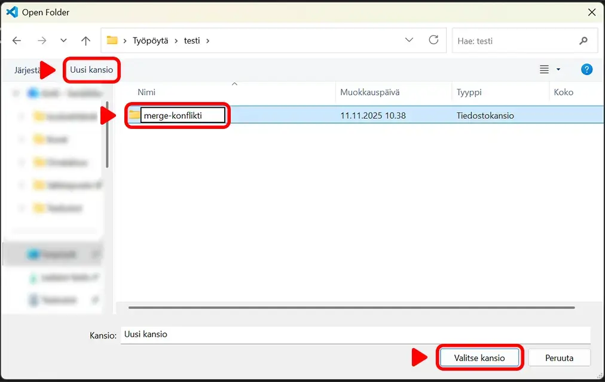
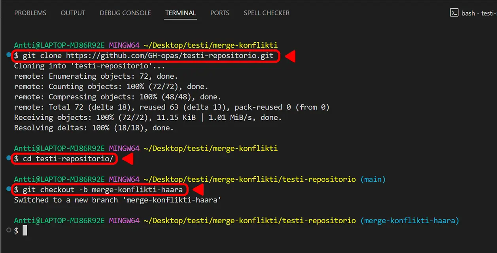
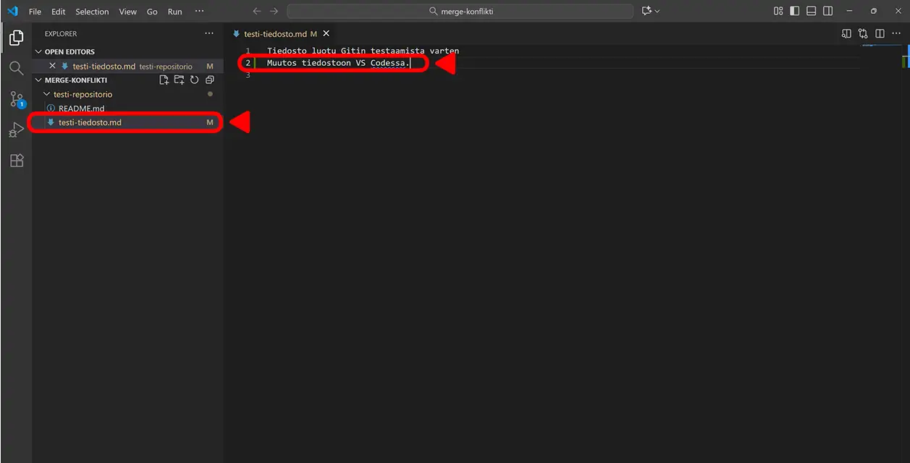
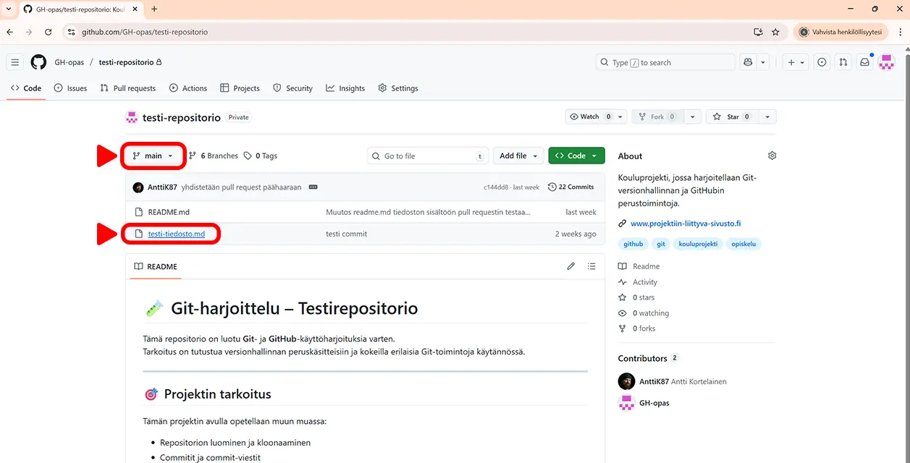
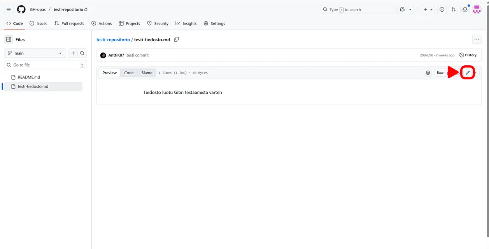
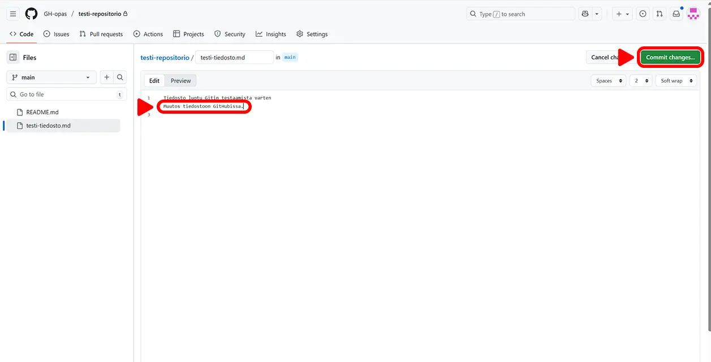
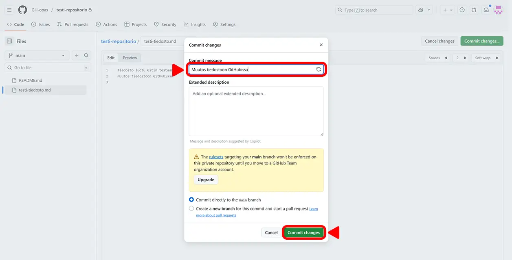
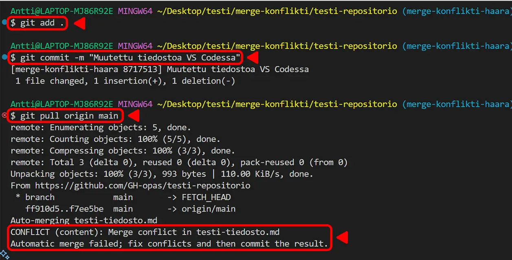
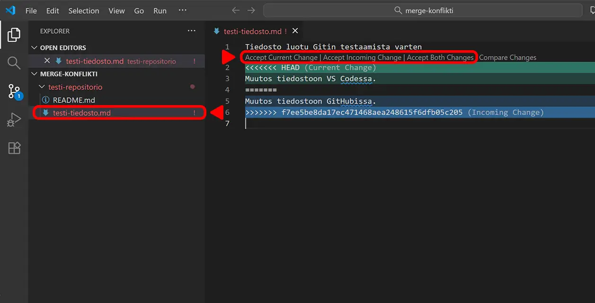

Tässä ohjeessa opit, miten merge-konflikti syntyy ja
kuinka se ratkaistaan käytännössä.
Harjoituksessa simuloidaan konfliktia ja sen korjaamista hyödyntäen VS Codea, terminaalia sekä
GitHubia.
Huom! Merge-konflikteja voidaan ratkaista myös monilla muilla eri tavoilla ja
työkaluilla, esimerkiksi GitHubin editorilla, VS Coden merge-näkymällä tai
komentorivipohjaisilla ratkaisuilla.
Merge-konfliktien ratkaiseminen
Aluksi luodaan paikallinen kansio ja kloonataan siihen etärepositorio
git-opas. Sen jälkeen muokataan samaa tiedostoa GitHubin päähaarassa sekä
paikallisesti omassa haarassa, ja lopuksi yhdistetään muutokset, jolloin syntyy
merge-konflikti.
Luo uusi kansio testausta varten
Klikkaa Open Folder
Aloitusnäkymä VS Codessa
Navigoi haluamaasi kansioon ja klikkaa
Uusi kansio
Anna kansiolle nimi ja klikkaa Valitse kansio

Uuden kansion luominen ja valitseminen
Kloonaa (clone) etärepositorio ja luo uusi haara
Avaa Git Bash VS Coden terminaaliin
Kloonaa repositorio git-opas pilvestä omalle koneelle komennolla
git clone https://github.com/repositorion/url-osoite.git
Siirry repositorion sisältävään kansioon komennolla
cd kansion-nimi
Luo uusi git-haara ja siirry uuteen haaraan komennolla
git checkout -b haaran-nimi

Repositorion kloonaus ja uuden haaran luominen komennoilla
Tee muutokset tiedostoon
Tee haluamasi muutokset tiedostoon testi-tiedosto.md (tai johonkin
muuhun tiedostoon kunhan teet muutokset myöhemmin samaan tiedostoon GitHubissa)
Tallenna muutokset CTRL + S pikanäppäimillä

Valittu tiedosto ja muutokset tiedostoon
Siirry selaimella GitHubiin ja valitse käyttämäsi repositorio
Varmista, että olet päähaarassa
Avaa sama tiedosto, johon teit muutokset paikallisesti klikkaamalla tiedoston nimeä

Valitun git-haaran varmistaminen ja tiedoston valitseminen
Tee muutokset tiedostoon GitHubissa
Klikkaa kynä-ikonia avataksesi muokkausikkunan

Tiedosto ja muokkausikkunan avaaminen
Tee haluamasi muutos tiedostoon
Ja klikkaa Commit changes...-nappia

Muutosten tekeminen tiedostoon ja Commit changes... -nappi
Anna commit-viesti Commit message -tekstikenttään
Ja klikkaa Commit changes -nappia tallentaaksesi muutokset
päähaaraan

Commit-viestin lisääminen ja Commit changes -nappi
Commitoi paikalliset muutokset ja
Siirry takaisin VS Codeen ja avaa terminaali
Lisää paikalliset muutokset staging-alueelle komennolla
git add .
Commitoi muutokset paikalliseen repositorioon komennolla
git commit -m "commit-viesti"
Tuo etärepositoriosta tehdyt muutokset
Tuo etärepositoriossa tehdyt muutokset paikalliseen repositorioon komennolla
git pull origin main
Tässä vaiheessa pitäisi syntyä merge-konflikti
Git ilmoittaa terminaalissa konfliktista, eikä tiedostoa voida yhdistää automaattisesti

Paikallisten muutosten commitointi ja muutosten tuonti etärepositoriosta
Ratkaise merge-konflikti
Avaa konfliktit sisältävä tiedosto VS Codessa klikkaamalla
tiedoston nimeä (tiedosto on merkitty punaisella värillä ja
huutomerkillä)
Konfliktit on merkitty erikoismerkeillä ja väreillä: vihreä näyttää paikalliset
muutokset ja sininen etärepositoriosta tulevat muutokset
Ratkaise konflikti klikkaamalla AcceptCurrent,
Incoming tai BothChanges -nappia riippuen
siitä mitkä muutokset haluat säilyttää
Tallenna tiedosto CTRL + S pikanäppäimillä

Merge-konfliktin ratkaiseminen VS Codessa
Lisää ratkaistut tiedostot staging-alueelle komennolla
git add .